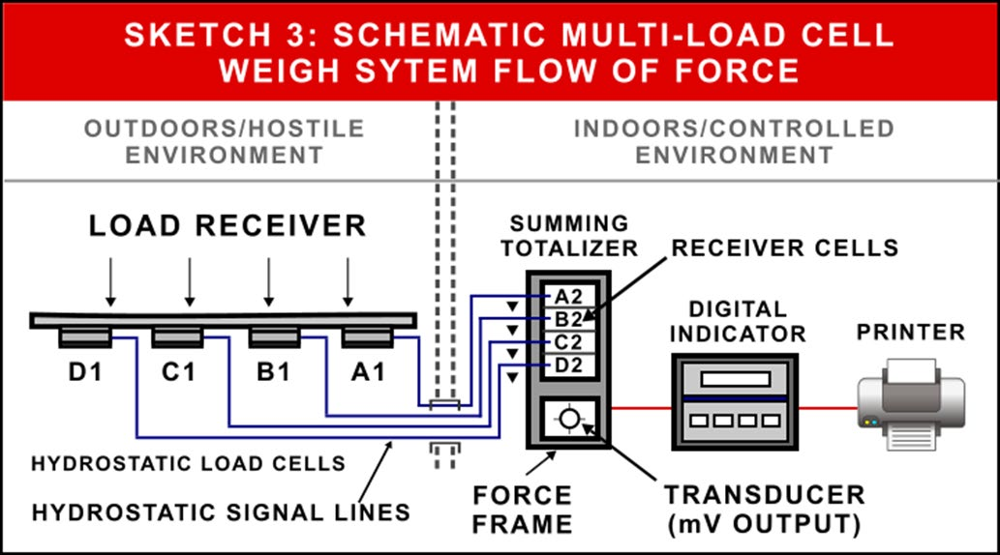

Emery Winslow Scale · 技術
Hydrostatic™ 静圧技術
Hydrostatic™ は Emery Winslow Scale の計量技術です。スケールの下にあるロードセルは流体圧力で動作し、電子部品を含みません。電子部品はスケールから離れた清潔で乾燥した室内に配置されます。

違いは電子部品の配置場所にあります
図面上は、複数ロードセルの電子スケールと Hydrostatic™ スケールは似て見えます。違いは合算ネットワークです。電子スケールでは、ロードセル、ケーブル、合算基板がスケールにあり、プラットフォームと同じ水、粉塵、落雷のリスクにさらされます。
Hydrostatic™ スケールでは、合算トータライザー（Summing Totalizer）は制御室やスケールハウスなどの保護された場所に設置されます。スケールにあるのは機械式ロードセルと圧力配管のみです。メーカーはこれを、環境に敏感な部品はすべて安全な場所に置くこと、とまとめています。

荷重から表示値まで
ロードセルが重量を圧力に変換
ピストンが薄い流体膜の上のダイヤフラムを押します。各セルには既知の有効面積があるため、圧力は荷重に比例して上昇します。メーカーの例：50,000 lb が 50 平方インチにかかると 1,000 psi になります。
配管が圧力を伝える
各ロードセルは高圧の銅またはステンレス配管で合算トータライザー（Summing Totalizer）に接続されます。メーカーは継手を 15,000 psi 定格としています。
合算トータライザー（Summing Totalizer）が力を合算
各ロードセルに対応する受信セルが圧力を垂直方向の力に戻します。それらの力は1台の高精度ひずみゲージ変換器で合算され、ミリボルト信号を出力します。
表示器が重量を表示
信号はデジタル化されて表示されます。合計は、荷重がセル間でどのように分配されるかには依存しません。
メーカーの説明
以下の項目は Emery Winslow Scale 自身の説明です。各プロジェクトに適用される内容は HearS が見積で確認します。
水と洗浄
スケールに電子部品がないため、水、浸水、洗浄がそこの電子部品に届くことはありません。
落雷とサージ
スケールから電子部品へ信号ケーブルが走っていないため、スケールへの落雷がケーブルを伝わることはありません。電源へのサージ保護は引き続き推奨されます。
生涯保証
Emery Winslow は静圧式ロードセルに対し、水、高圧洗浄、結露、湿度、浸水、サージ、静電気、溶接サージ、落雷による故障について生涯保証（メーカー保証）を提供します。
腐食と衛生
ロードセルはステンレスや、媒体に応じて選ばれたその他の金属で製造できます。
衝撃と振動
流体が振動と衝撃荷重を緩和するため、過酷な用途に適しています。
セルの交換
メーカーによれば、同じ有効面積のセルであれば、多くの場合、再校正なしで取り付けることができます。
価格は高く、運用コストは低い
メーカーは、Hydrostatic™ は電子式の同等品より購入価格は高いものの、所有コストで比較すべきだと述べています。
使用場所
屋外：タンク・ホッパースケール、トラックスケール、鉄道用軌道スケールで、落雷、雨、浸水が主なリスクとなります。
屋内：フロア・ベンチスケール、タンク・ホッパースケール、ミキサー、モノレール・クレーン用スケール、カスタムシステムで、洗浄、腐食性媒体、爆発性粉塵やガス、振動、電気ノイズのある工場に対応します。
メーカーが挙げる業界には、食品、化学、輸送、農業、肥料、鉄鋼・金属、航空が含まれます。

静圧式と電子式を並べて見る
違いは、計量部に何があるかです。静圧式ロードセルは密封されたステンレス製カプセルで、電子部品がありません。電子式システムは、ひずみゲージ式ロードセル、ジャンクションボックス、信号ケーブルを水・洗浄・落雷の届く場所に置きます。

静圧式ロードセル、モデル 136-75：密封ステンレス製カプセルで、計量部に電子部品はありません。画像：Emery Winslow Scale Company 
メーカーによる比較：スケッチ 1（左）は典型的な電子式計量システム——ひずみゲージ式セル、ジャンクションボックス、ケーブルが計量部にあります。スケッチ 2（右）は静圧式システムです。画像：Emery Winslow Scale Company
出典：Emery Winslow Scale Company、Hydrostatic™ Technology、 https://www.emerywinslow.com/hydrostatic-technology/、15/11/2026 アクセス。HearS の言葉で要約したもので、正式な情報はメーカーのページです。
Hydrostatic™ は Emery Winslow Scale Company の商標です。画像：Emery Winslow Scale Company、公表どおり完全な形で掲載しています。
Hydrostatic™ はお客様の現場に適していますか？
何を計量するのか、現在の現場がスケールにどのような影響を与えているかをお聞かせください。HearS がアドバイスと見積を行います。